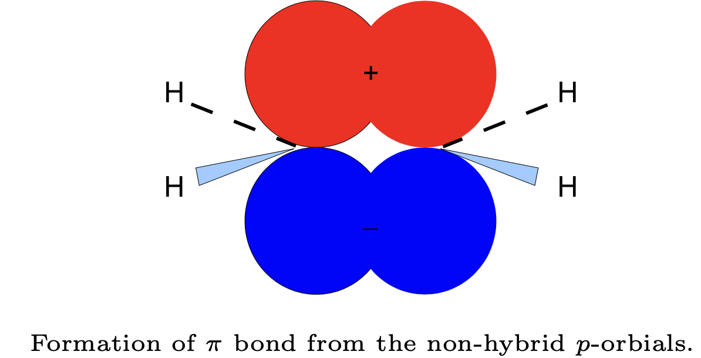
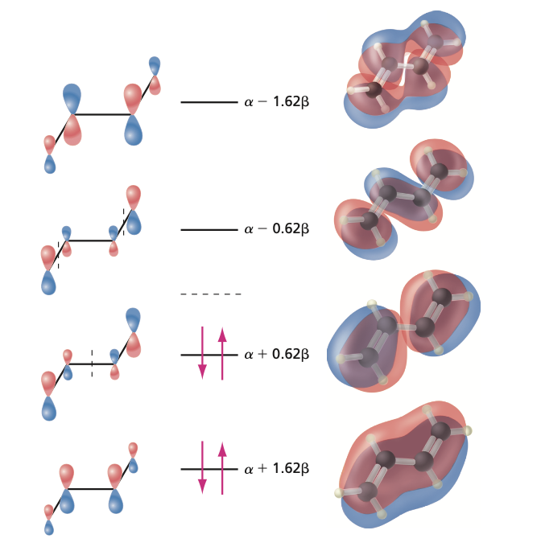
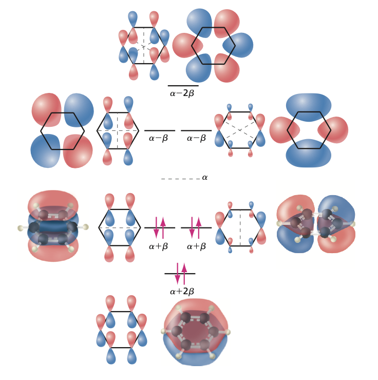

Huckel molecular orbital theory#
Conjugated systems#
Molecules with extensive \(\pi\) bonding systems, such as benzene, are not described very well by the valence bond theory because the \(\pi\) electrons are delocalized over the whole molecule. \(\sigma\) and \(\pi\) bonds are demonstrated below for ethylene (\(C_2H_4\) with \(sp^2\) carbons):
Note that we have chosen \(z\)-axis along the internuclear axis. Because both \(\sigma\) and \(\pi\) bonding occurs between the two carbon atoms, we say that this is a double bond. Note that the hybrid orbitals here also explain the geometry. For triple bonds, one \(\sigma\) and two \(\pi\) bonds are formed.

Huckel MO theory#
Huckel molecular orbital theory assumes that the \(\pi\) electrons, which are responsible for the special properties of conjugated and aromatic hydrocarbons, do not interact with one another and the total wavefunction is just a product of the one-electron molecular orbitals. The \(\pi\) molecular orbital of the two carbons in \(C_2H_4\) can be written approximately as:
where \(\phi_1\) and \(\phi_2\) are the \(2p_y\) atomic orbitals for carbon 1 and 2, respectively. By using the variational principle gives the following secular determinant:
In H”uckel theory, the secular equation is simplified by assuming:
All the overlap integrals \(S_{ij}\) are set to zero unless \(i = j\), when \(S_{ii} = 1\).
All diagonal matrix elements \(H_{ii}\) are set to a constant denoted by \(\alpha\).
The resonance integrals \(H_{ij}\) (\(i \ne j\)) are set to zero except for those on the neighboring atoms, which are set equal to a constant (\(\beta\)). Note that the indices here also identify atoms because the atomic orbitals are centered on atoms.
In Huckel theory, the Coulomb integral \(\alpha\) and the resonance integral \(\beta\) are regarded as empirical parameters. They can be obtained, for example, from experimental data. Thus, in the Huckel theory it is not necessary to specify the Hamiltonian operator! Expansion of the determinant in Eq. (\ref{eq11.66}) leads to a quadratic equation for \(E\). The solutions are found to be \(E = \alpha \pm \beta\). In general, it can be shown that \(\beta < 0\), which implies that the lowest orbital energy is \(E_1 = \alpha + \beta\). There are two \(\pi\) electrons and therefore the total energy is \(E_{tot} = 2E_1 = 2\alpha + 2\beta\). Do not confuse \(\alpha\) and \(\beta\) here with electron spin.
Solving for Huckel MOs#
The wavefunctions (i.e. the coefficients \(c_1\) and \(c_2\) can be obtained by substituting the two values of \(E\) into the original linear equations:
For the lowest energy orbital (\(E_1 = \alpha + \beta\)), we get (including normalization):
and for the highest energy orbital (\(E_2 = \alpha - \beta\)) (including normalization):
These orbitals resemble the H\(_2^+\) LCAO MOs discussed previously. This also gives us an estimate for one of the excited states where one electron is promoted from the bonding to the antibonding orbital. The excitation energy is found to be \(2|\beta|\), which allows for, for example, estimation of \(\beta\) from UV/VIS absorption spectroscopy.
HOMO orbital |
= The highest occupied molecular orbital. |
|---|---|
LUMO orbital |
= The lowest unoccupied molecular orbital. |
Example: 1,3-butadiene#
Lets alculate the \(\pi\) electronic energy for 1,3-butadiene (\(CH_2=CHCH=CH_2\)) by using the Huckel theory. First we have to write the secular determinant using the rules given earlier. In order to do this, it is convenient to number the carbon atoms in the molecule:
In this case there are two scenarios that should be considered:
A localized solution where the \(\pi\) electrons are shared either with atoms 1 and 2 or 3 and 4. This would imply that the \(\beta\) parameter should not be written between nuclei 2 and 3.
A delocalized solution where the \(\pi\) electrons are delocalized over all four carbons. This would imply that the \(\beta\) parameters should be written between nuclei 2 and 3.
Here it turns out that scenario 2) gives a lower energy solution and we will study that in more detail. In general, however, both cases should be considered. The energy difference between 1) and 2) is called the {resonance stabilization energy}. The secular determinant is:
To simplify notation, we divide each row by \(\beta\) and denote \(x = (\alpha - E) / \beta\):
Expansion of this determinant gives \(x^4 - 3x^2 + 1 = 0\). There are four solutions \(x = \pm 0.618\) and \(x = \pm 1.618\). Thus there are four possible orbital energy levels:

There are four \(\pi\) electrons, which occupy the two lowest energy orbitals. This gives the total \(\pi\) electronic energy for the molecule:
and the lowest excitation energy is \(1.236|\beta|\).
The four Huckel MO wavefunctions are (calculations not shown):
Example: Benzene Molecule#
Let’s now apply the H”uckel method for benzene molecule. The secular determinant for benzene is (electrons delocalized):
The solutions are (where the six \(\pi\) electrons should be placed):
